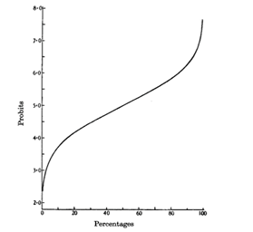
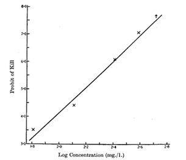
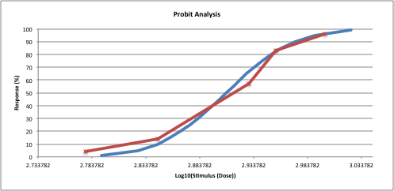
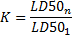

Probit Analysis
Probit Analysis is a method of analyzing the relationship between a stimulus and the binomial response. Probit analysis is widely used to analyze bioassays in pharmacology, entomology and pathology almost exclusively with quantal (all-or-nothing) responses. The procedure runs probit regression and calculates dose-response percentiles, such as LD50 (ED50), LD16, LD84.
How To
Run: Statistics→Survival Analysis→ Probit Analysis command.
Select a covariate Stimulus (Dose) variable containing stimulus levels – usually, concentration or dose level. The values cannot be negative.
Select a response Effect (Size) variable containing number of cases showing a response to the stimulus. The values of this variable cannot be negative.
As proposed by Miller and Tainter [MTA,GHO] percentages values with 0% (Effect=0) and 100% (Effect=N) response are corrected using the () and () formulas correspondingly (method can be adjusted in the Advanced Options).
Select a Total (Group Size) variable containing a total number of subjects tested at a particular stimulus level. The values of this variable must be positive.
Optionally, to calculate LD50 for cumulative action estimate and coefficient of cumulation specify the second set of data.
Casewise deletion is used for missing values removal.
Probit Analysis
The idea of probit analysis was originally proposed by Chester Ittner Bliss in 1934. He offered the idea of transforming the sigmoid dose-response curve to a straight line. The method was further developed by D. J. Finney [FN1]. In order to estimate regression parameters, the percentage kill observed is converted to probits. Typical relationships between percentages and probits and between log(stimulus) and probits are shown on the figures below. Linear relationship is analyzed using either least squares or maximum likelihood regression. Regression equation takes form , where a – is the intercept, b – is the slope of the line (shown in results as beta), e – is the error term.
|
 |
 |
Results
Regression is computed using two algorithms:
· Finney method – regression between log(dose) and probit values, assuming the tolerance follows a normal distribution after log() transformation.
· Simple least squares regression method assuming the tolerance follows a normal distribution (offered by Prozorovsky [PRZ]).
Observed/expected table includes actual stimulus values (doses), corrected percentages – ratio of the count to the sample size (R/N), probit percent - estimated ratio (R/N) based on the probit model, sample sizes N, actual response R and predicted response E(R) values. Chi-square goodness-of-fit test is performed.
Dose (stimulus) percentile table includes predicted stimulus values, with standard errors and confidence intervals, probit values for various percentiles (1,5,10,…,90,95,99).
LD50 (also called LC50, ED50) is the median lethal dose, an amount of test subject which causes the death of one half (50%) of a group of test population. Measures such as LD10, LD16, LD84, LD90 and LD100 (dosage required to kill 10%,..,100%, respectively, of the test population) are occasionally used for specific purposes.
Response-log(dose) plot with sigmoidal curve and regression line is produced. Optionally, Probit-Dose plot can be made using the Advanced Options in the data input dialog.

Coefficient of cumulation
If the data for a cumulative effect estimation is specified then LD50 for cumulative action and the coefficient of cumulation [KAG,HAY] are calculated. Lethal doses obtained from different groups are evaluated separately in terms of their numerical relationship to the daily dosages that contributed to them and then used to calculate coefficient of cumulation:

Values less than 1.0 signify high cumulation, values greater than 5.0 signify slight cumulation.
References
[BLS] Bliss CI. (1934). "The method of probits". Science 79 (2037): 38–39.
[FN1] Finney, D. J., Ed. (1952). Probit Analysis. Cambridge, England, Cambridge University Press.
[FN2] Finney, D. J. and W. L. Stevens (1948). "A table for the calculation of working probits and weights in probit analysis." Biometrika 35(1-2): 191-201.
[MTA] Miller, C.L. and M.L. Tainter, 1944. Estimation of LD50 and its error by means of log-probit graph paper. Proc. Soc. Exp. Biol. Med., 57: 261-264.
[GHO] Ghosh MN. 1984. Fundamentals of experimental pharmacology, 2nd ed. Calcutta: Scientific Book Agency.
[PRZ] Prozorovsky V.B. Application of a method of least squares for probit-analysis of the lethality curves // Farmakol.i toksikol. - 1962.
[KAG] Kagan, J. S. (1970). Cumulation and the criteria and methods of evalu- ating and predicting chronic poisoning. In “Principles and Methods for Establishing Admissible Tolerances for the Concentration of Hazardous Substances in the Air of Industrial Premises” (A.A. Letavet and I.V. Sanokov, eds.), pp. 49–65.
[HAY] Hayes' Handbook of Pesticide Toxicology, Third Edition, Academic Press, 3 edition (2010), Chapter 1, Dose and Time Determining, and Other Factors Influencing, Toxicity by Karl K. Rozman, John Doull and Wayland J. Hayes, Jr.